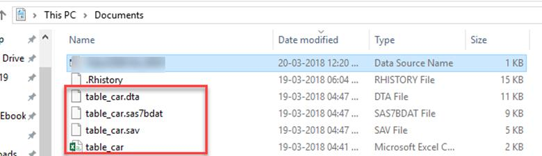
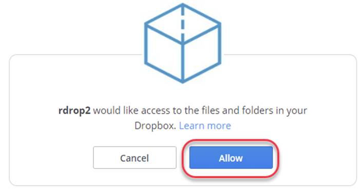
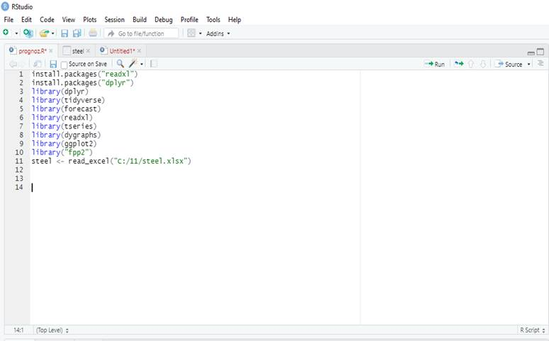
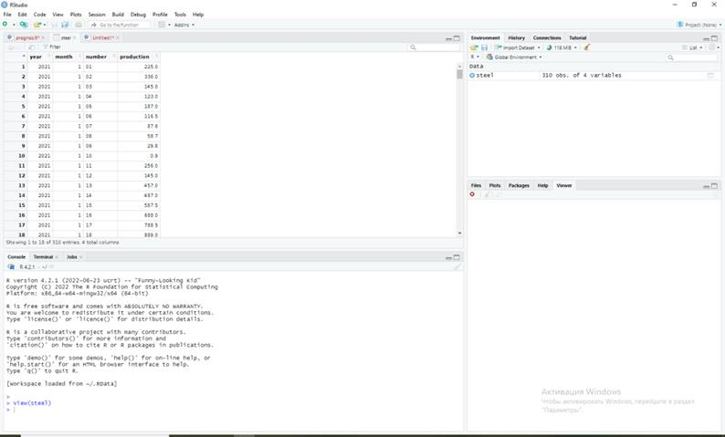
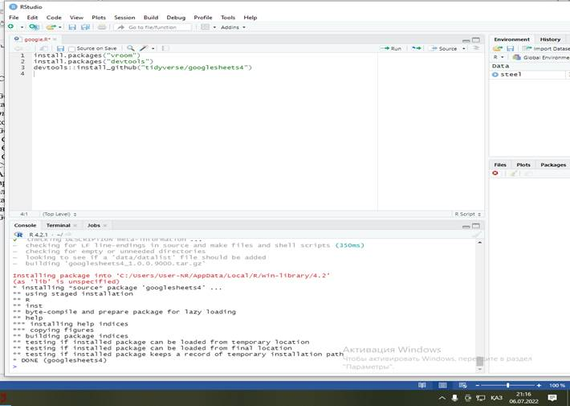
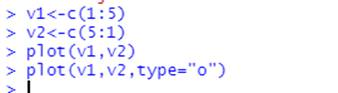
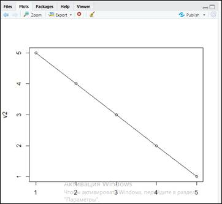
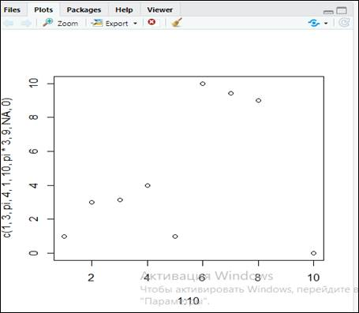

3. Үлкен көлемді деректерді экспорттау
және импорттау тәсілдері. Диаграммалар және графиктермен
жұмыс
Мақсаты: R программалау тілінде деректерді
әр түрлі жолдарға экспорттауды және импорттауды үйрену. R
программалау тілінде деректерге байланысты диаграммалар және графиктерді құруды
үйрену.
Үлкен
көлемді деректерді экспорттау тәсілдері.
Деректерді қатты дискіге экспорттау үшін сізге файл жолы мен
кеңейтілімі қажет. Біріншіден, жол-бұл деректер
сақталатын орын. Бұл практикалық жұмыста қатты
диск, Google drive, Dropbox орталарына мәліметтерді экспорттауды
қарастырамыз.
R пайдаланушыларға деректерді әртүрлі файл
түрлеріне экспорттауға мүмкіндік береді, мысалы: CSV, XLSX, RDS,
SPSS, STATE.
Қатты дискіге экспорттау
Жұмысты бастау үшін сіз деректерді тікелей жұмыс
каталогына сақтай аласыз. Келесі код жұмыс каталогының жолын
басып шығарады:
directory <-getwd()
directory
Нәтижесі:
## [1] "/Users/15_Export_to_do"
Қалыпты жағдай бойынша файл төменде көрсетілген жол
негізінде сақталады:
Mac OS үшін:
/Users/USERNAME/Downloads/
Windows үшін:
C:\Users\USERNAME\Documents\
Сонымен қатар, жүктеу бумасының жолын өзгертуге де
болады.
CSV экспорты
Негізгі синтаксис:
write.csv(df, path)
arguments
-df: Dataset to save. Need to be the same name of the data frame in the
environment.
-path: A string. Set the destination path. Path + filename + extension i.e.
"/Users/USERNAME/Downloads/mydata.csv" or the filename + extension if
the folder is the same as the working directory
Мысалы:
write.csv(df, "table_car.csv")
Түсіндірмесі:
write.csv (df, “table_car.csv"): қатты дискіде CSV файлын жасау.
df: ортадағы деректер жақтауының атауы
“table_car.csv": table_car файл атауы және оны csv ретінде
сақтау
Excel файлына экспорттау
Excel файлын жасау үшін xlsx кітапханасын пайдаланады. Ол үшін
ең алдымен xlsx қажетті
кітапхананы орнату керек.
Windows пайдаланушылары
Егер сіз Windows пайдаланушысы болсаңыз, кітапхананы conda
көмегімен тікелей орнатуға болады:
conda install -c r r-xlsx
Кітапхананы орнатқаннан кейін write функциясын пайдалануға
болады. xlsx(). жұмыс каталогында жаңа Excel жұмыс кітабы
жасалады:
library(xlsx)
writer.xlsx(df, "table_car.xlsx")
Егер сіз Mac OS пайдаланушысы болсаңыз, келесі қадамдарды
орындауыңыз керек:
1-қадам: Java-ның соңғы нұсқасын
орнату;
2-қадам: rJava кітапханасын орнату;
3-қадам: XLSX кітапханасын орнату;
1-қадам) сіз Java-ны Oracle ресми сайтынан жүктеп, орната
аласыз.
Сіз Rstudio - ға оралып, Java-ның қай нұсқасы
орнатылғанын тексере аласыз.
system("java -version")
2-қадам) Rjava-ны r-ге орнату керек, Anaconda-мен R және
Rstudio орнатуды ұсынамыз. Anaconda кітапханалар арасындағы
тәуелділікті басқарады.
3-қадам) Соңында, xlsx орнату уақыты келді. Мұны
істеу үшін тағы бір рет conda-ны қолдануға болады:
conda install -c r r-xlsx
Windows пайдаланушылары сияқты, сіз write функциясын қолдана
отырып деректерді сақтай аласыз.xlsx ()
library(xlsx)
Нәтижесінде:
## Loading required package: xlsxjars
write.xlsx(df, "table_car.xlsx")
Басқа типті файлдарға экспорттау
SPSS файлы
Төменде SPSS бағдарламалық жасақтамасына деректерді
экспорттау коды берілген:
write_sav(df, "table_car.sav")
Sac файлын экспорттау
Sas, .dta. файлдарына экспорттау
үшін сәйкесінше келесі кодтарды қолданамыз:
write_sas(df, "table_car.sas7bdat")
write_data(df, "table_car.dta")
Файлдарды экпорттағаннан кейін, оларды сақтау жолы бойынша
тексере аласыз (Сурет 29).

Сурет 29- Файлдардың орналасуы
Бұлтты сервистермен өзара байланысы
R бұлтты есептеу қызметтерімен өзара әрекеттесу
үшін сәйкес кітап-ханалармен жабдықталған.
Google drive
Google Drive-пен өзара әрекеттесуге мүмкіндік беретін
функцияға кіру үшін googledrive кітапханасын орнату керек.
Сіз оны консольдегі төмендегі код арқылы орната аласыз.
install.packages("googledrive")
Кітапханы қолдану:
library(googledrive)
Google Drive ішіне жүктеу
Файлды GoogleDrive-қа жүктеу үшін drive_upload ()
функциясын пайдалану керек.
Rstudio-ны қайта іске қосқан сайын сізден GoogleDrive-қа
кіруге рұқсат сұралады.
Негізгі синтаксис drive_upload ()
drive_upload(file, path = NULL,
name = NULL)
arguments:
- file: Full name of the file to upload (i.e.,
including the extension)
- path: Location of the file- name: You can rename it
as you wish. By default, it is the local name.
Кодты іске қосқаннан кейін бір неше сұрақтарды растау қажет
drive_upload%<("table_car.csv",
name ="table_car")
Нәтижесінде:
## Local file:
## * table_car.csv
## uploaded into Drive file:
## * table_car:
1hwb57eT-9qSgDHt9CrVt5Ht7RHogQaMk
## with MIME type:
## * text/csv
Содан кейін сіз кіруге рұқсат беру үшін Google API-ге қайта бағытталасыз. Онда
рұқсат ету (Allow) батырмасын басыңыз.
Dropbox-қа экспорттау
R rdrop2 кітапханасы арқылы Dropbox-пен өзара
әрекеттеседі. Сіз оны консоль арқылы орнат аласыз:
install.packages('rdrop2')
library(rdrop2)
Сіздің тіркелген деректеріңізбен сізге Dropbox-қа уақытша
қолжетімділікті беруіңіз керек. Ең алдымен, сіз өзіңіздің
есептік жазбаңызға кіруді қамтамасыз етуіңіз керек.
drop_out()
Аутентификацияны растау үшін сіз Dropbox-қа қайта бағытталасыз
(Сурет 30).

Сурет 30 - Dropbox-қа уақытша қолжетімділікті беру
Файлды жүктеу үшін .Dropbox-та csv, drop_upload () функциясын
қолданыңыз.
Негізгі синтаксис:
drop_upload('table_car.csv',
path = "my_first_drop")
Үлкен көлемді деректерді импорттау
тәсілдері
R программалау тілінде әр түрлі форматтағы
мәліметтерді импорттауға болады. Соның ішінде ең жиі
қолданылатын ол excel файлы.
Еxcel файлын импорттау үшін R Studio программасына readxl кітапханасын
орнатуымыз қажет. Ол үшін командалар жолына
install.packages("readxl") командасын енгізе отырып, Enter батырмасын
басу арқылы орнатамыз.
R Studio программасы excel файлын тану үшін
library(readxl)
кітапханасын іске қосамыз (Сурет 31).

Сурет 31 - Excel файлындағы мәліметтерді импорттау
steel <- read_excel("C:/11/steel.xlsx")
командасы Excel файлындағы мәліметтерді программаға
импорттау үшін қолданылады. Мұнда файлдың қайда
орналасқандығы туралы жол көрсетіледі.
Программаны іске асырғаннан кейін (Run) Excel файлындағы
мәліметтер программа терезесінде бейнеленеді (Сурет 32).

Сурет 32- Excel файлындағы мәліметтер программада бейнеленуі
Google кестелерінің API-мен жұмыс істеу үшін, google
sheets 4 пакетін қолданамыз. Оны орнату үшін
install.packages("google
sheets 4") командасын қолданамыз.
Google sheets 4 пакетінде кем дегенде 3 авторизация әдісі бар:
- Gs4_auth () функциясының стандартты параметрлерін
қолданыңыз.
- Өзіңіздің қосымшаңыз арқылы
кіріңіз.
- Сервис аккаунты арқылы кіру.
Стандартты аргумент мәндерімен авторизациялау
Авторизацияның ең оңай жолы әдепкі бойынша
қабылданған дәлелдер мәні бар gs4_auth () функциясын
қамтамасыз етеді.Бұл тәсілдің кемшілігі-сіз оны
қолданушылардың 90% - ы сияқты әдепкі пакетке
бекітілген қосымшаны қолданасыз. Сондықтан Google Cloud-та
қосымшаны өз бетіңізше құруды және
оның көмегімен авторизациядан өтуді қолдану
қажет.
Google Cloud жұмыс істеу үшін tidyverse/googlesheets4 пакетін
орнатуымыз керек. Ол үшін
devtools::install_github("tidyverse/googlesheets4") командасын
орындаймыз (Сурет 33).
Пакет іске қосылу үшін
Library (google sheets 4) кітапханасын іске қосамыз.

Сурет 33- googlesheets 4 пакетін орнату
Google-ға авторизация жасау үшін
gs4_auth (email="кесте орналасқан адресті жазу@gmail.com")
Бұл команданы іске қосып көрсеңіз, бірден gmail
почтасына бағытталасыз.
Google кестесін импорттауға арналған толық код:
// googlesheets4 пакетін іске
қосу
library(googlesheets4)
// Google-ға авторизация жасау үшін
gs4_auth(email="почта@gmail.com")
//Google-ға авторизация жасау үшін (кейбір программаларға
осы код үзіндісі жұмыс жасайды)
gs4_find (email="почта@gmail.com")
// кестеге қосылу
ss<-as_sheets_id("1jbyEoQshyYmimSsCXaBMoUeMUBqQkhBuqlddPEYpq44")
// кестенің атауы
sheet_names(ss)
// кітаптағы бет атауын көрсету
qs_qa_data<-read_sheet(ss=ss,sheet="dec")
Диаграмма және графиктермен жұмыс.
R программалау тілінде графтармен
жұмыс істеу үшін ggplot2 кітапха-насы қолданылады.
Әдеттегідей ең алдымен кітапхананы қолданбас бұрын, оны
орнатып алу қажет:
install.packages("ggplot2")
Сызықтық график.
График сызу үшін plot
функциясын қолданыламыз. Ал, қарапайым график сызу үшін v1,
v2 векторларын алайық. Қарапайым сызықтық график сызу
үшін, мынадай командалар тізбегін қолданыламыз:

Нәтижесінде, 34-ші
суреттегідей функция графигі сызылады.

Сурет 34- Сызықтық график
Графиктермен жұмыс істеуге арналған функцияларды
қарастырайық (Кесте 5)
Кесте 5
Графиктермен
жұмыс істеуге арналған негізгі функциялар
|
plot(x) |
x осінде реттелген x мәндерінің графигі (y
осінде). |
|
plot(x,у) |
Екіөлшемді график |
|
sunflowerplot(x,y) |
Нүктелері боялған екіөлшемді график |
|
piechart(x) |
Дөңгелек диаграмма |
|
hist(x) |
x жиілік гистограммасы |
|
contour(x,y,z) |
Контур графигі(x және y вектор, ал z - матрица). |
|
persp(x,y,z) |
Үш өлшемді график |
Сонымен
қатар, диаграмманы басқару командаларына тоқталайық (Кесте
6).
Кесте 6
Диаграмманы басқарудың негізгі командалары
|
Points(x,y) |
Нүктелерді қосу |
|
Lines(x,y) |
Сызықтарды салу |
|
Text(x,y,labels,…) |
Координаталарға мәтін қосады |
|
Segments(x0,y0,x1, y1) |
(x0,y0)
нүктесінен (х1,у1) нүктесіне сызықты салады |
|
Rect (x1,y1,x2,y2) |
тіктөртбұрыш салады |
|
Poligon(x,y) |
х және у координаталары нүктелерімен
шектелген полигон салады |
|
Title() |
Графиктің тақырыбы |
|
Legend(x,y,legend) |
Графиктің легендасын тіркейді |
Мысал қарастырайық.
Нүктелі қарапайым графикті қарастырып көрейік:
install.packages("ggplot2")
install.packages("dplyr")
library(ggplot2)
library(dplyr)
grapics::plot()
plot(x=1:10,
y=c(1,3,pi,4,1,10,pi*3,9,NA,0),type='p')
Мұнда 1-10 дейін
аралықта y=1,3,pi,4,1,10,pi*3 мәнін
анықтайтын функция саламыз (Сурет 35).
Практикалық жұмыс
барысында графиктің түстерін, сызық стилін ауыстыруға
болады.

Сурет 35- Функция графигі
Тапсырмалар:
1. 2020-2021 о.ж. бойынша 5В011100-Информатика мамандығының
Ақпараттық-коммуникациялық технологиялар пәні бойынша
оқу үлгерімін кесте толтыра отырып, R программасына
экспорттаңыз.
2. Банк жүйесінде соңғы 10 күн ішінде
клиенттердің іс-әрекеттері туралы ақпаратты Google Drive
кестесіне толтыра отырып, R программасына қажетті кітапханалар мен функцияларды
енгізе отырып экспорттаңыз.
3. Өз бетіңізше «Кафедраның оқытушылары» туралы
ақпарат негізінде жасалған Google кестесін R програмасына
импорттаңыз.
4. Кез келген тақырып бойынша алынған .csv
форматындағы ақпаратты R программасына
импорттаңыз.
5. Басқа статистикалық программалық ортадан
мәліметтерді импорттауды өз бетінше орындаңыз.
6. 2021 жылы Алматы, Нұр-Сұлтан қалалары бойынша Covid-19
ауырғандардың санының қатынасы бойынша график
салыңыз.
7. 2021-2022 оқу жылы бойынша ҰБТ тапсырған түлектер
бойынша ақпарат беретін дөңгелек диаграмма
тұрғызыңыз.
8. y= 2x2 + 4x – 5 функция графигін салыңыз.
Бақылау сұрақтары:
1. Excel файлына экспорттауды қай функциялардың көмегімен
жүзеге асырылады?
2. Sav форматында файлдарды экспорттау үшін қандай командалар
жүйесі орындалады?
3. Google drive бұлтты жүйеге файлдарды экспорттау үшін
қандай жұмыстар атқарылады?
4. Dropbox-қа экспорттау үшін ең алдымен қандай
жұмыстар атқары-лады?
5. Excel құжатындағы мәліметтерді R программасына
импорттау бары-сында қандай кітапханалар мен командалар тізбегі
қолданылады?
6. Google кестесін R программасына импорттау барысында қолдану-шыны
авторизациялау үшін қандай команадалар негізі қолданылады?
7. Excel құжатындағы мәліметтерді R программасына
импорттау мен Google кестесін R программасына импорттау барысында қандай
ұқсастықтар мен айырмашылықтар бар?
8. Функция графигін тұрғызу үшін қандай функциялар
қолданылады?
9. Консоль мен RScript жұмыс аумағында функция графиктерін
салудың қандай айырмашылықтары бар?
10. Графиктермен жұмыс істеу үшін қандай функциялар
қолданылады?
11. Диаграмманы басқарудың қандай негізгі командалары бар?
12. Segments(x0,y0,x1, y1) командасы не үшін қолданылады?